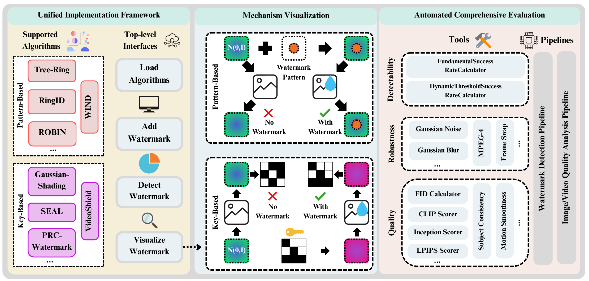

Biography
Hi! My name is Leyi Pan (潘乐怡). I am currently a 2nd-year Ph.D. student at the School of Software, Tsinghua University, advised by Prof. Lijie Wen. Before that, I received my B.Eng. from Tsinghua University in 2024.
I am currently a research intern on LLM reasoning and reinforcement learning at Tongyi Lab, Alibaba Group (mentored by Dr. Yunpeng Zhai). Previously, I interned at Zhipu AI and served as a research assistant at CUHK MISC Lab.
My research interests mainly lie in:
- LLM Reinforcement Learning (current focus)
- Trustworthy AI
Feel free to reach out if you would like to discuss research or explore potential collaboration!
News
- 2026.06 Our new work RLCSD is released on arXiv.
- 2026.06 MarkLLM has reached 1k stars!
- 2026.05 MarkDiffusion receives minor revision at JMLR.
- 2026.04 d-TreeRPO is accepted by ACL 2026 Main!
- 2025.08 Omni-SafetyBench is released on arXiv.
- 2025.07 GLM-4.5V and GLM-4.1V-Thinking is released on arXiv! (76 authors including Leyi Pan)
- 2025.05 Can LLM Watermarks Robustly Prevent Unauthorized Knowledge Distillation? is accepted by ACL 2025 Main.
Selected Preprints / Publications
A full publication list is available on my Google Scholar page. (* denotes equal contribution)
LLM Reinforcement Learning (current focus)


Trustworthy AI


Projects
I enjoy building useful and reusable research frameworks for the community.


Education
-
 2024.09 - Present, Ph.D. @ Tsinghua University, Beijing, China.
2024.09 - Present, Ph.D. @ Tsinghua University, Beijing, China. -
2020.09 - 2024.06, B.E. @ Tsinghua University, Beijing, China.
Internships
- 2025.07 - Present
 Tongyi Lab, Alibaba Group, Research Intern
Tongyi Lab, Alibaba Group, Research Intern - Topic: LLM reasoning and reinforcement learning. Mentor: Yunpeng Zhai.
- 2024.10 - 2025.06
AI Lab, Zhipu AI, Research Intern
- Topic: Reasoning and reinforcement learning for multimodal large language models. Mentor: Shiyu Huang.
- 2024.06 - 2024.08
 CUHK MISC Lab, Research Assistant
CUHK MISC Lab, Research Assistant - Topic: Trustworthy AI. Supervisor: Irwin King.
- 2023.06 - 2023.08
KuaiShou Technology, Research Intern
- Topic: Tool-integrated agent. Mentors: Haojie Pan, Ruiji Fu.
Service
- Reviewer: ACL ARR, NeurIPS, ICLR.
Honors and Awards
- 2025 Tsinghua Excellent First-class Scholarship / 清华大学综合优秀一等奖学金.
- 2024 Outstanding Graduate of Beijing / 北京市优秀毕业生.
- 2024 Outstanding Graduate of Tsinghua / 清华大学优良毕业生.
- 2024 Tsinghua Outstanding Graduation Project / 清华大学优秀毕业设计.
- 2021-2023 Tsinghua Excellent Student Award / 清华大学综合优秀奖学金.
Contact
- Email: panly24@mails.tsinghua.edu.cn
- Email: panleyi2003@gmail.com